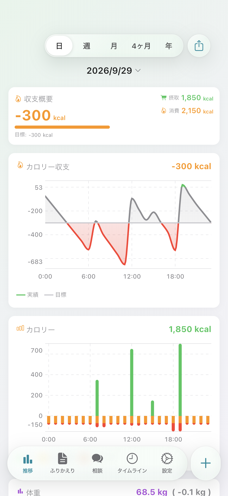
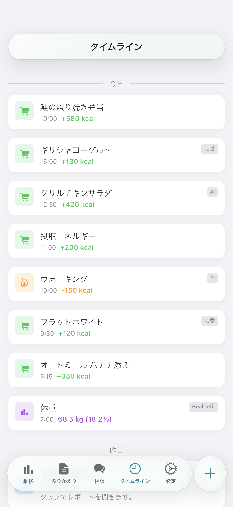
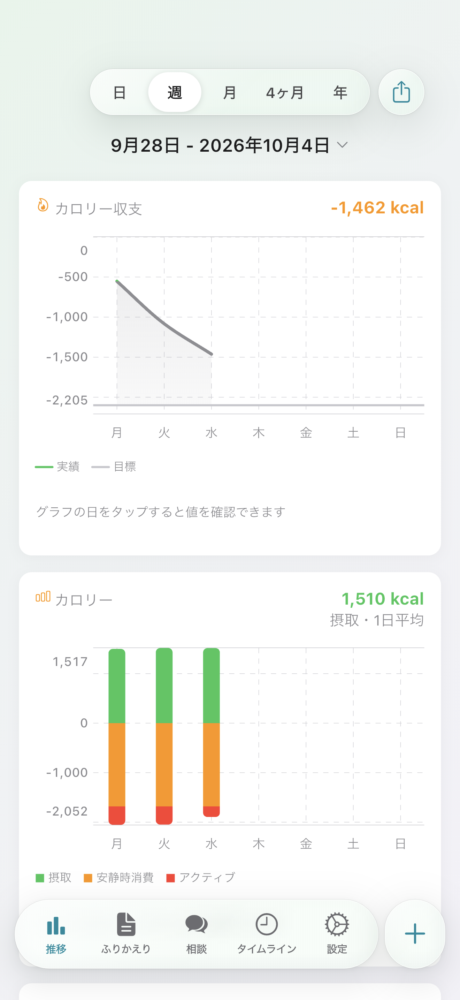
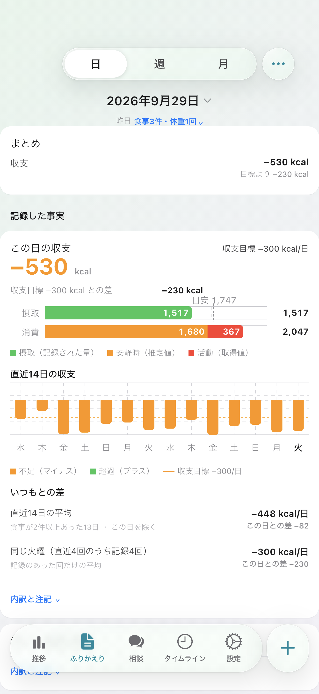
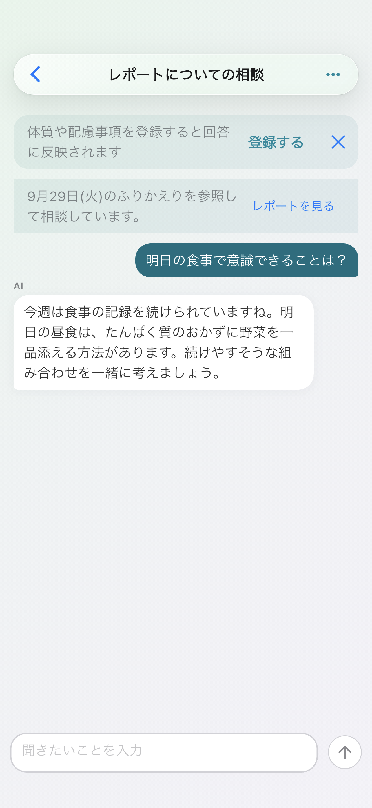

グラフに、比較用の線。
選んだ基準の線を重ねて、いつもの記録と比較できます。
食べたカロリーから、使ったカロリーを引く。その差が、一日の収支です。消費はヘルスケアから取り込み、食事の記録は AI でも補えます。
手入力 / プリセット / AI
ヘルスケアから取得
摂取より消費が 300 kcal 多い日
健康データは原則端末内。AI 利用時の送信については、下のよくある質問をご確認ください。

食事・運動・体重をひとつのタイムラインで。手入力か AI か HealthKit か、ソースもひと目でわかります。
手入力・プリセット・AI 推定で食べた量を記録。
Apple ヘルスケアとヘルスコネクトから、消費カロリーと体重を自動で取り込みます。
今日の収支を、ひと画面で。
カロリー収支・記録・プリセット・ヘルスケア連携・日／週／月のふりかえりは、無料でも使えます。

この見本は AI に接続していません。固定サンプルの仮の数値を表示する操作デモで、実際の食品のカロリーではありません。
手入力やプリセット、AI 推定で食事を記録。入力シートの一部を、固定サンプルで操作できます。
固定サンプルを入力して、表示・選択・追加の順に試せます。
現在のアプリの入力シートの一部を再現したWeb操作見本です。食品名・カードの値は表示用の仮データです。カメラ・履歴・下方の栄養や日付の入力はこの見本では使えません。完了はWeb内の表示だけで、保存・送信しません。×は見本を最初の状態に戻します。
手入力やAI推定で確定した分は、選択中のカードと一緒に記録されます。
タイムラインに表示される名前です。カロリーの計算やAI推定には使いません。
食べたものや量を入力すると、カロリーの目安を出せます。
保存前に何度でも数値を調整できます。決めるのはあなたです。
「30 分のウォーキング」のように、消費カロリーも見積もれます。
日・週・月のふりかえりで気になったことを、記録の要約と一緒に AI に相談できます。送信先と共有項目への同意が必要です。
収支と体重の推移を並べて、一週間をふりかえります。一日の増減だけでなく、しばらく続けた記録から確かめられます。

日・週・月の記録を、AIを使わずにまとめて確認。気になった内容は、ふりかえりの要約を引き継いで AI に相談できます。

食事や記録について、文章で質問できます。ふりかえりから始めた相談では、記録の要約をもとに話を続けられます。AI の回答は推定情報であり、医療や個別の栄養指導ではありません。

無料・広告あり。アカウント登録なしで始められます。
カロリズム Plus は iOS（日本）向けの任意プランです。無料の機能はそのままに、比較や分析を追加できます。
選んだ基準の線を重ねて、いつもの記録と比較できます。
PFCバランスや食塩相当量を、公的な目安と並べて確認できます。
週と月のふりかえりに分析カードを追加。収支と体重、期間ごとの変化を詳しく見られます。
| 機能 | 無料 | Plus |
|---|---|---|
| 摂取・消費・カロリー収支の表示 | ||
| 食事の記録 | ||
| 運動の記録 | ||
| 体重の記録とグラフ | ||
| ヘルスケアとの自動連携 | ||
| よく使う食事のプリセット保存 | ||
| 食事・運動・体重のタイムライン | ||
| ホーム画面のウィジェット | ||
| 日・週・月のふりかえり | ||
| グラフの比較用の線 | — | |
| ふりかえりの追加分析 | — | |
| AI の推定・相談 | より多く | |
| AI のウェブ検索 | — | |
| 以前の相談を見られる件数 | 最新3件 | 最新30件 |
| 広告 | あり | 非表示 |
Plus は iOS の日本向けです。Android は現時点では無料のみです。
ふりかえり自体は無料です。Plus では、そこに比較や分析が加わります。
アプリの AI 利用には上限があります。
食事の推定や相談で、商品の栄養情報などを必要に応じて確認します。実際に検索を行った場合は、検索なしより多くのポイントを消費します。検索の設定・利用枠に条件があり、毎回検索するわけではありません。
ここにないものは、お気軽にお問い合わせください。